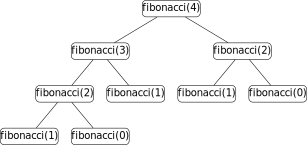

Récusivité
Un premier exemple
La somme des $n$ premiers entiers est la somme : $$1+2+ \cdots + (n-1) + n$$ On peut calculer cette somme à l'aide du programme suivant :
def somme(n):
s = 0
for i in range(n+1):
s += i
return ssomme est itérative, à l'aide d'une boucle for elle répète des instructions un certain nombre de fois.
Une autre façon de programmer somme est de remarquer que $somme(n) = somme(n-1) + n$ :
$$somme(n) = \underset{somme(n-1)}{\boxed{0+1+2+\cdots +(n-1)}}+n$$
Cette formule est valable pour $n$ entier strictement positif, pour $n = 0$, on a simplement $somme(0) = 0$.
On obtient une formulation récursive, la définition de $somme$ fait appel à $somme$ :
$$ somme(n) = \left\{
\begin{array}{ll}
0 & \text{si } n=0 \\
n+somme(n-1) & \text{si } n>0 \\
\end{array}
\right. $$
Cette formulation donne directement le programme suivant :
def somme(n):
if n == 0:
return 0
else:
return somme(n-1) + nsomme ainsi obtenue est une fonction récursive, elle contient un appel à elle-même.
Exemple : Visualisation d'un appel à somme(3)
Fonction récursive
Une fonction est dite récursive si elle contient un appel à elle-même. Elle est toujours constituée de un ou plusieurs cas de base (ou conditions d'arrêt) et de un ou plusieurs cas récursifs.
Les cas récursifs sont ceux qui renvoient à la fonction entrain d'être définie et les cas de base sont ceux qui donne un résultat.
def somme(n):
#cas de base
if n == 0:
return 0
#appel récursif
else:
return somme(n-1) + nsomme(n-1) dans le corps de la fonction est un appel récurssif.
Prenons pour autre exemple la suite de Fibonacci qui doit son nom à Leonardo Fibonacci. Dans un problème récréatif posé dans l'ouvrage Liber abaci publié en 1202, il y décrit la croissance d'une population de lapins. La fonction fibonacci(n) donne le nombre de lapins au bout de n mois et est définie de la manière suivante :
\[ \text{fibonacci}(n) = \left\{
\begin{array}{ll}
0 & \text{si } n=0 \\
1 & \text{si } n=1 \\
\text{fibonacci}(n-2) + \text{fibonacci}(n-1) & \text{si } n>1 \\
\end{array}
\right. \]
Ce qui donne la fonction python ci-dessous :
def fibonacci(n):
#premier cas de base
if n == 0:
return 0
#deuxième cas de base
elif n == 1:
return 1
#appel récurssif double
else:
return fibonacci(n-1) + fibonacci(n-2)fibonacci(4) Cette fonction a deux cas de base et un cas récursif double, il y a deux appels récursifs dans le cas récursif.
L'ensemble des appels récursifs lors de l'éxécution d'une fonction récursive peut être représenté sous la forme d'un arbre des appels. Par exemple pour fibonacci(4), on obtient l'arbre suivant :

Pour qu'une fonction récursive se termine, il faut qu'au bout d'un nombre fini d'appels récursifs un cas de base soit appelé.
C'est bien le cas dans un appel de somme(n) où l'appel récurssif est somme(n-1), après $n-1$ appels le cas de base est atteint.
De la même manière, un appel à fibonacci(n) fini toujours par appeler fibonacci(0) et fibonacci(1).
Cependant, dans les deux cas, il faut que n soit un entier positif.